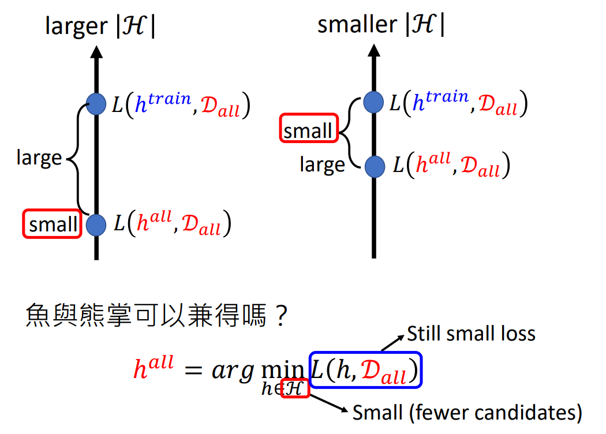
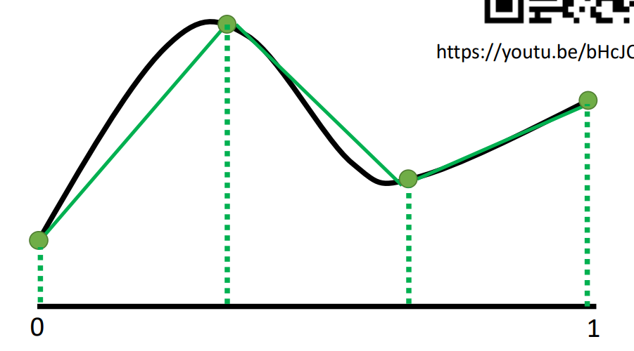
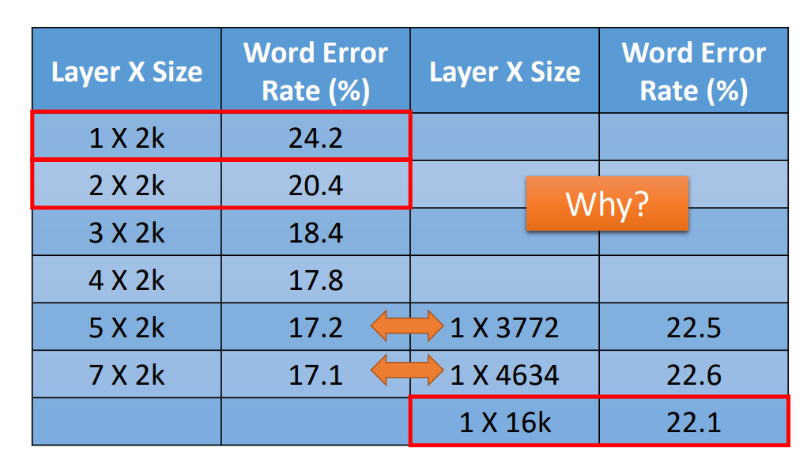
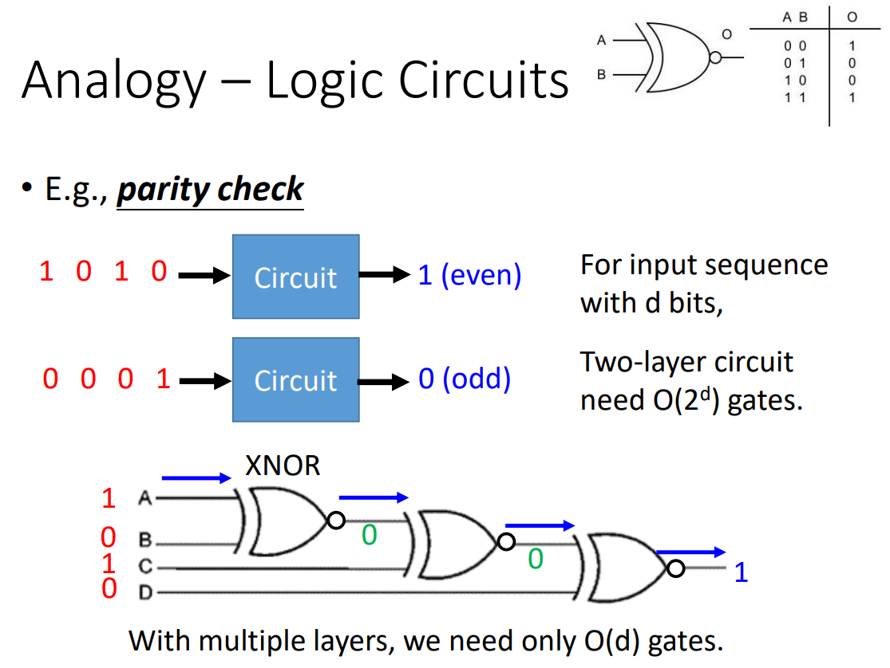
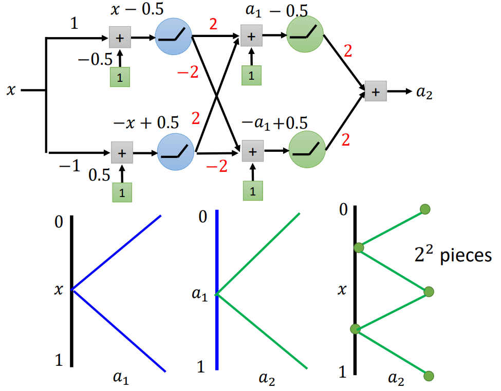
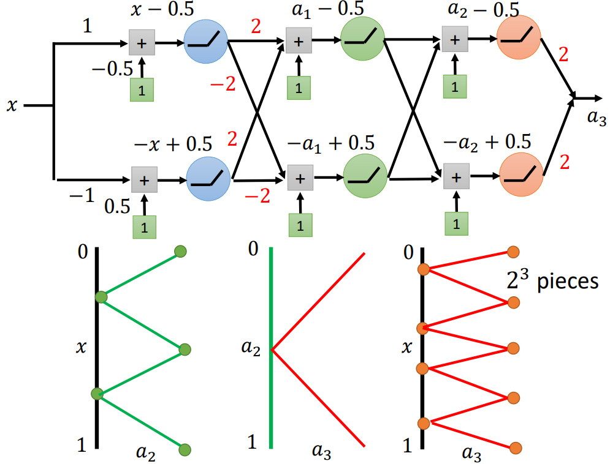

李宏毅老师的这节课没有讲到什么“干货”，但是讲了一个挺有意思的问题，也是解决了一个困扰了我很久的疑问。
引言——鱼与熊掌可以兼得吗#
在机器学习中，我们常常构建一个模型，并希望通过训练让模型找到合适的参数，即从集合
如下图所示，当模型参数量大，模型可选择面比较大时，理想loss比较小，但是“理想”和“现实”差距大；模型参数少，模型可选择面比较小时，模型的理想loss比较大，但是和“现实”差距小。
而深度学习，是一个能用比较少的参数（这里的少是相对达到同样效果的非深度学习模型而言的），却能达到比较低的理想loss的方法，同时由于参数较少，“理想”和“现实”差距较小。所以说深度学习是“鱼与熊掌可以兼得”的机器学习。
为什么需要隐藏层#
训练模型，其实就是在寻找一个以人力不可能写出的复杂非线性函数。而对于任何一个非线性函数，其实都可以通过合适的采样，然后把采样点连起来形成折线去近似，随着折线数的增加，近似会越来越精确。
而对于折线，可以用一系列的阶梯函数（如下图上的
为什么需要“deep”#
那么曾经有人就提出了一个问题，既然一个隐藏层就可以表达出任意非线性函数，为什么要Deep Learning而不是“Fat Learning”呢？
概括成一句话就是：Deep Learning可以从简单的非线性函数构成复杂的非线性函数，相比简单的叠加方式产生非线性函数，Deep Learning能高效地利用比较少的参数产生复杂的非线性函数
实验结果#
Conversational Speech Transcription Using Context-Dependent Deep Neural Networks 里面对比了Deep Learning架构和“Fat Learning”架构对于相同任务的效果，对于Deep Learning而言，5层、每层2000个神经元的模型和1层、3772个神经元的模型参数数是接近的，但是5层网络的架构效果更好。
形象的理解#
假设今天我们要实现四个二进制数中1的个数的统计，4个二进制数有16种可能，那么如果电路只有两层，就需要16个门电路，但是如果用下图中的多层同或门电路，就可以只用三个门形成的电路，相对而言就比较高效。
举例说明#
下面举一个构成

对于
这个例子表示在构成复杂但是有一定规律的函数上，Deep Learning 相比“Fat Learning”是具有优势的。对于图像、语音、文字等任务，由于图像、语音、文字有一些内在特性、规律，需要的函数也可能会有一定规律（比如图像分类模型需要模型能提取特征），所以用Deep Learning方法训练的模型会有比较好的效果。
作者: 核子